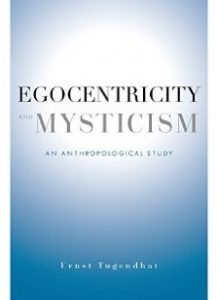
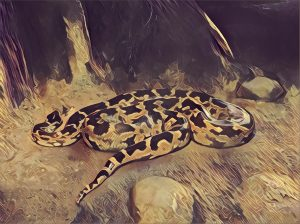

Tugendhat, Ernst. Egocentricity and Mysticism: An Anthropological Study. Translated by Alexei Procyshyn and Mario Wenning. New York: Columbia University Press, 2016. ISBN-10: 0231169124. Hardcover, e-book. 200 pages.
Distilled from a philosophical probing across language, action, ethics, phenomenology, and religion, Ernst Tugendhat’s Egocentricity and Mysticism offers a semantic approach to anthropology that links the use of propositional language to alternative forms of mysticism “of this world.”
By identifying the use of propositional language (and the consequences thereof as “I”-sayers among other “I”-sayers in an objective world) as the most salient anthropological constant, Tugendhat presents a new, alternative form of mysticism that does not commit the faux pas of transcendence nor withdrawal from the world. As a reader unfamiliar with his previous works this piece nonetheless struck me as a rare combination of candor and erudition, accessible to those curious about mysticism or philosophy of the self while retaining it’s analytical rigor.
Part one, “Relating to Oneself,” offers a cogent analysis of how the structure of propositional language makes possible various aspects of human behavior that other animals are not capable of, namely, inquiring into reasons, negotiating with others, deliberating towards some future goal, etc. Carrying the centrality of propositional language in human affairs into part two, “Stepping Back From Oneself,” Tugendhat applies these anthropological reflections to the most existentially enigmatic aspects of an I-sayer’s behavior: religion and mysticism. In so doing, Tugendhat develops a postmetaphysical philosophical anthropology that, as the translator duly notes, “is not merely a ‘postanalytic’ or ‘postcontinental’ work, or a straightforward work of intercultural philosophy, but is something qualitatively new” (pp. xiii).
Chapter one, “Propositional Language and Saying ‘I’,” begins with the disclaimer that while analyzing the use of the word “I” will not reveal all there is to know about the structure of human self-relation [Sich-Verhalten], it is nevertheless a productive starting point. Tugendhat justifies this with reference to Aristotle from a contemporary perspective that emphasizes the propositional structure of semantics distinct of human languages as the grounds from which a consciousness of the good arises (pp. 4-5).
Whereas all other species are constrained to the use of situation-relative signal-languages [Signalsprachen], the propositional content of human language is cross-contextually stable and therefore allows I-sayers to make reference to objects in space and time beyond the place of context [Situation]. These capacities for deliberation and position taking [Stellungnehmen] together with the objectification of self and environment [Umwelt] are only possible, Tugendhat argues, through the use of propositional language. By outlining the paradigmatic features of propositionally structured language, Tugendhat provides the framework of understanding through which the phenomenon of human egocentricity may be understood.
Chapter two, “‘Good’ and ‘Important’,” builds on this anthropological framework of humans as I-sayers to expound on their capacity for deliberate intent or purpose [Vorsatz]. Concluding in the previous chapter that an I-sayer takes himself to be absolutely important while more or less explicitly aware that others care about themselves just as much (as the referential function of “I” situates him among a plurality of I-sayers but with opinions, feelings, and beliefs which he knows as his own), Tugendhat makes the case that the words “good” and “important” are as significant to the lives of I-sayers as is the word “I” itself.
The fact that human beings care for themselves [um such sorgen] is analyzed with respect to I-sayers’ capacity for practical deliberation; to choose from a range of possibilities what is good or “better.” Tugendhat clarifies that this deliberative desire cannot be determined by feeling [Gefühl] (of pleasure or pain) but rather by representations [Vorstellung] because reference to the good belongs to propositional language and hence an inquiry into reasons beyond the context-dependent stimuli of pleasure or pain (pp. 19-21). This is to say that I-sayers have the distinguished ability to pursue long-term goals in spite of momentary pleasures or pains. Thus the distinction between sensuous and deliberative desire for an I-sayer when deciding what is “good” or “better.”
In chapter two Tugendhat furthermore elaborates as to how the structure of egocentricity, itself rooted in propositional language, makes possible the ability to step back from oneself. Bearing in mind that “good” implicitly figures into deliberate intent (insofar as an I-sayer inquires into reasons that justify a course of action as “better” or “worse”), he distinguishes between two expressions of action, “end in itself” [Selbstzweck] and “final purpose” [Endzweck].
Whereas the former is an activity undertaken for it’s own sake, such as going for a walk or watching television, “the talk of final purposes…pertains to something, to a being: I relate to something as a final purpose when I am concerned about this something’s very being and well-being” (pp. 21-22). This possibility of relating to something as a final purpose can be extended to others (including other I-sayers, animals, plants, things such as art, complex wholes such as the state, etc.) and begets the question of how to do so well given the prospect of different future states (to paraphrase, “what is the best way to lead one’s life in the face of a plurality of goals and possibilities?”).
Moreover, in finding a fascinating role for altruism in this philosophical anthropology, Tugendhat postulates a dynamic tension between egoism and altruism in which deliberative beings become altruists at the same time as they become egoists because they have to decide how egoistically or altruistically and to whom they act towards (by virtue of having to deliberate “who’s well-being is my concern”). In making this distinction between altruism and egoism Tugendhat foreshadows an alternative form of mysticism that involves learning to recognize the unimportance of self-importance: “It is no longer a question of expanding the sphere of my care, but rather of becoming aware of how small this sphere is, no matter how wide I make it” (pp. 26).
In chapter three, “Saying ‘I’ in Practical Contexts,” Tugendhat sets out to explain the problem of freedom in terms of the capacity to self-mobilize and a sense of responsibility characteristic of deliberative intent. Building off of the works of Tyler Burge and Sydney Shoemaker, by virtue of the fact that I-sayers can act differently according to varied reasons there exists a “locus of responsibility” from whence deliberation is carried out.
As Tugendhat succinctly relays, “…the locus of responsibility is not something in me—some ‘ego’—nor is it something attached to me [an mir]. Rather, I am this locus as I…[W]hen I think or deliberate, thinking and deliberation do not merely belong to me; they are not merely inner states, nor do I stumble across them in myself. Rather I am the one who carries them out: I am the actor—the agent, as Burge and Shoemaker say” (pp. 32). Thus the word “I” does not refer to something in the speaker as an essential self or ego but rather refers to the speaker as a grammatical subject capable of a doing [ein Tun] that is characteristically deliberative.
Thematic of what constitutes this existential becoming of I-sayers, another dynamic tension emerges in which the I-sayer—as a desiring agent and deliberative being—must subordinate sensuous motives and inner states (categorized as “passive”) to the goal-oriented, purposive action one engages in when behaving deliberately (categorized as “active”). Elsewhere defining the locus of responsibility as “the capacity for the ‘I’-activity of deliberation,” (pp. 39), Tugendhat elucidates that the problem of responsibility is not to be understood through a legal or moral context but rather a prudential one in which one steers their deliberative intent towards certain goals out of motivation for the good (whether for one’s own well-being or another’s).
In other words, as an I-sayer who can desire something by varying degrees of intensity (and moreover as subject to affective-valuations of encouragement or blame), the choices made to pursue one goal instead of another are only possible because of their ability to relate to a goal with greater or lesser resolve (i.e. to deliberate prudentially). However, with this ability to self-mobilize and the whole range of new emotions thereof (such as prudential self-blame [Selbstvorwurf]) comes the simultaneous prospect of failure by one’s own hands, thus becoming also a new source of suffering as from oneself [an such selbst] (pp. 45-47).
Chapter four, “Adverbial, Prudential, and Moral Good; Intellectual Honesty” expounds on the different cases of “good” and the virtue of intellectual honesty as they’re understood within the framework of propositionally structured language. While Tugendhat explicates that he does not have a satisfactory theory of the adverbial good, his formulation of the adverbial good as always carrying with it an intersubjective demand and as an evaluation of degrees of excellence makes for a useful definition in his philosophical anthropology (pp. 50-51).
The moral good is couched in the adverbial good as a contingency of members in a moral community demanding of one other reciprocally that they do not transgress against norms which hold the community together. Drawing from Plato’s conception of the prudential good in contradistinction to Christianity and the modern ethics of Immanuel Kant and Jeremy Bentham, Tugendhat develops this particular sense of the good not as related to reciprocal demand nor as necessarily dependent on the recognition of others but as those activities and virtues which are experienced by I-sayers (from the first-person perspective) as good for themselves (i.e. aiming for something good even in instrumental actions) (pp. 52, 55).
These different cases of the good are not mutually exclusive yet it is in the adverbial good which Tugendhat grounds the distinctiveness of intellectual honesty as a virtue “to counteract the ‘obscuring effects’ that affect can have on our orientation toward the goals of deliberation—toward personal well-being or the well-being of others” (pp. 62-65). In taking up this virtue of intellectual honesty an I-sayer is more capable of the self-abnegation involved when (at least) partially putting oneself into perceptive [Selbstrelativierungen] and it is in this process of stepping back from one’s self-immersed perspective that postmetaphysical forms of mysticism are possible.
Chapter five, “Relating to Life and Death,” concludes part one of Egocentricity and Mysticism with considerations on “the How” of life with respect to managing the plurality of concerns an I-sayer may have and on the unifying effect that confronting death has on I-sayers to provoke a reflection of one’s own life as a whole. Furthermore clarifying the meaning of prudential good, an I-sayer’s pursuit of the “prudential good” entails a relation to themselves and their life as a whole (including future states) and is best expressed in the practical question, “how are you doing?,” which concerns not so much the overall affective state [Gesamtzustand] (e.g. “I feel excited”) but a person’s overall situation [Gesamtsituation] (pp. 69-71).
Unlike other animals, humans become distracted by a plurality of concerns and have to navigate “the How” of life—prioritizing certain goals over others, inquiring about different reasons for or against a given action, counteracting the “obscuring effects” of sensuous desires, etc. While it is not impossible to find a unified “How” with respect to the motley mire of desires and many goals in one’s life, it is the confrontation with death which prompts and intensifies this question of “how to live well?” (pp. 83-84).
By taking this affective egocentric entanglement on the whole as being less important, an I-sayer orients themselves toward the objective of mysticism, which as Tugendhat relays is to step back from the “self” [“sich”] as the locus of desire; to step back from “the clinging or cleaving that is characteristic of human egocentricity—the clinging or cleaving to the objects of the will, starting with the impossibility of letting go of the fear of death” (pp. 85). Death therefore appears as a motivational source because it confronts I-sayers with the contingency and finitude of human life, provoking one to step back from their egoism and egocentricity and to recognize one’s own interests as relativity unimportant (pp. 85).
Chapter six and seven, “Religion and Mysticism” and “Wonder” respectively, constitute part two of Egocentricity and Mysticism, “Stepping Back from Oneself.” Whereas part one dealt with essential features of human agency and the use of propositionally structured language, part two addresses the viability of an alternative form of mysticism by comparing and contrasting religion and mysticism as two forms of collectedness [Gesammeltseins] with regard to “the How” of life (pp. 89). As a result of the context-transcending character of propositional content I-sayers are caught between the distraction of a plurality of concerns on the one hand and the need for cohesion or to collect oneself on the other.
This need for humans to collect themselves, as Tugendhat explains, cannot be satisfied by the “self” serving as a reference point [Hinsicht] for self-collection but rather by an understanding of oneself in relation to something that is “of this world” (e.g. another person, a community, a cause, etc.) (pp. 90-92). Defining religion narrowly in terms of belief in superhuman personal entities with a focus on the Judeo-Christian tradition of faith in One God, Tugendhat makes the case that religion is no longer capable of attenuating the stresses and anxiety of the twenty-first century because the phenomenon of religion itself is founded on a pragmatic yet misguided motive to supplicate natural forces as personified entities (pp. 93-100).
Tugendhat furthermore frames Rudolf Otto’s experience of the numinous as characteristic both of religion and mysticism in the sense that I-sayers are confronted with the mysterium tremendum as a “wholly other” and immeasurable vastness that breaks conventional ratios of smallness or greatness, which in turn elicits a specifically numinous “state of mind” that he later speculates as a mode wonder in chapter seven (pp. 96).
However, while both religion and mysticism are responses to the conditions of contingency and finitude characteristic of human life, they diverge with respect to “the How” of self-collection in the face of difference: “The path of mysticism consists in putting the weight of one’s wishes into perspective, or even denying them. This involves a transformation of one’s self-conception. The path of religion, on the other hand, leaves wishes as they are and undertakes instead a transformation of the world by means of a wishful projection” (pp. 98-99).
In a comparative analysis between Buddhist, Taoist, and Christian mysticism, Tugendhat suggests that the Taoist ideal of unity of opposites allows for humans, amidst these troughs and peaks of change throughout one’s life, to cultivate a sense of unity with this rising/falling process as a whole of which one is a part. To reflect on this process as a unity rather than trying to change the world according to one’s desires can elicit an experience of the emotion known as peace of mind [Seelenfriede] (pp. 110).
Finally and together with a Taoist sense of mysticism Tugendhat postulates that the only mystical attitude which does not commit the faux pas of appealing to problematic forms of transcendence or withdrawal from the world is that of universal compassion as espoused by the Bodhisattva ideal from Mahāyāna Buddhism: “The core of such a this-worldly mysticism consists in taking oneself to be less important relative to the world, that is, relative to the other beings one encounters in the world, and hence, first and foremost, relative to other human beings” (pp. 121).
This move of humility to recognize the relative importance of one’s own life to others (and towards “kindheartedness” [Herzensgüte] to all sentient beings by an extension of the Bodhisattva ideal) is characteristically mystical in the sense that one steps back from their own self-involved concerns to break free from voluntative attachments (i.e. desires) in the face of the universe, not by appealing to some “transcendental other” such as God or Celestial Buddhas (pp. 94-95).
Extrapolating from the works of Ludwig Wittgenstein, Tugendhat presents a new formula for wonder in chapter seven in which he distinguishes a mode of wonder in a mystical sense from other forms of perplexed attentiveness [sich wundernden Aufmerken]. Drawing inspiration from Daoist mystics, Tugendhat suggests that we have to cultivate a sort of attentiveness to the world as a whole (akin to when Daoists speak of the Dao) in order to meet the contemporary demands of the twenty-first century (pp. 124). While this sense of the whole is regarded as the object of the mystic’s wonder, it is noteworthy to mention that it is the translator in a footnote from the introduction which states Tugendhat’s revised position that “[t]he mystic need not attend to ‘the world’ or ‘the universe’ as a whole, but may simply turn to ‘everything other in its uniqueness’” (pp. 144).
Perplexity [Sichwundern] and wonder [Staunen] are both occasions for further inquiry and involve a form of attentiveness but it is in wonder that an awareness of something lying beyond the realm of explanations emerges (pp. 131-132). Tugendhat identifies a mode of wonder in a mystical sense in which an I-sayer, in an encounter with the world as a whole or the irreducible uniqueness of someone/something other, becomes captivated by existents which fall beyond comprehension.
While Tugendhat presents a viably alternative, postmetaphysical form mysticism from within the framework of human beings ability to use propositionally structured language there is nevertheless the price for working primarily within Western philosophical thought. Although he sagaciously moves between accounts of Christianity, Buddhism, and Daoism to illustrate the possibility of a this-worldly [diesseitigen] mysticism, what would Tugendhat have to say about oral traditions? How does the vernacular of self-reference differ between and across different languages? Moreover, he leaves too open a question with regards to the concept of cultural science [Kulturwissenchaft] at the end of the addendum (pp. 141-142).
Would a task of this cultural science be to analyze the structure of propositional language as it is deployed by different persons speaking radically different languages? This unsatisfactory reference to cultural science leaves the question of his postmetaphysical mysticism open to criticism because the anthropomorphic constant of using propositionally structured language supposes a grammatical subject, “I,” yet Tugendhat does not elaborate whatsoever as to how this disposition of I-sayers might play out in different languages.
Furthermore, while he does not attempt to move beyond language, Tugendhat’s commendable effort to articulate a this-worldly mysticism begets the question: can an account of mysticism be wholly rational, even when it admits of a mystical mode of wonder characteristically mysterious and awe-inspiring? Is there a place for the irrational in Tugendhat’s philosophical anthropology, or does this element of irrationality extend only so far as I-sayers are explicitly attentive to the world as a unity of which one is a part (and thus pale in importance against the “big picture” of the universe)?
Like any postulation of a universal dimension of human beings, Tugendhat’s semantics approach runs the risk of overdetermining the role for conscious deliberation attributed to I-sayers and under-appreciating the potential role of unconscious factors in mystical experience. Nevertheless, in moving beyond the stereotypes of an immediate experience of “God” in Western religious mysticism and of a meditative immersion with an “ultimately reality” in Eastern religious mysticism, Tugendhat postulates mysticism as a breaking free from one’s voluntative attachments (i.e. desires) in the face of the universe (pp. 94). As an alternative form of mysticism available to all human beings by virtue of the use of propositionally structured language, the postmetaphysical mystic that Tugendhat presents in Egocentricity and Mysticism is thus realized through and in the world without the need to withdraw from, or transcend it.
Adam Loch is a graduate student at the University of Denver.